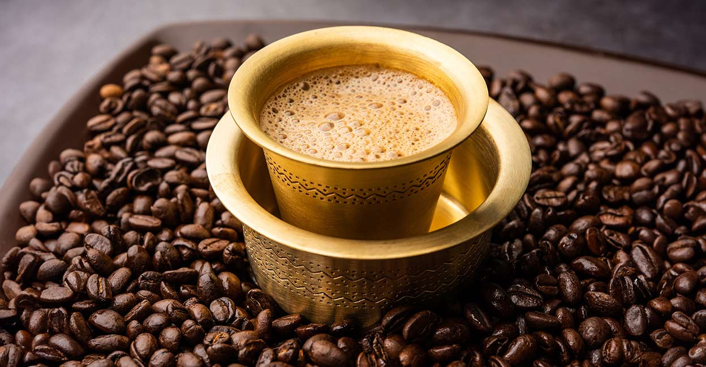

South Indian Filter Kaapi
What is the hype on Filter Kaapi?
Traditionally, Indian filter coffee is a milk-based beverage, similar to a café latte. Over time, it has been known by various names such as filter coffee, degree coffee, Mysore filter coffee, or Kumbakonam coffee, and was a household staple in South India long before café chains serving lattes and mochas became popular in urban India.
One sip of this rich, creamy drink can put you in awe. Your daily breakfast might soon be accompanied with a serving of filter kaapi to give you a good boost for the entire day. One cup of this can put you in a great mood!